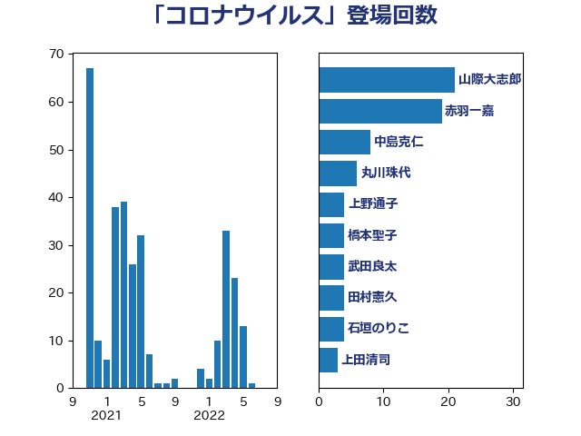

単語「コロナウイルス」

| 山際大志郎 | 自由民主党 | 21 回 |
| 赤羽一嘉 | 公明党 | 19 回 |
| 中島克仁 | 立憲民主党 | 8 回 |
| 丸川珠代 | 自由民主党 | 6 回 |
| 上野通子 | 自由民主党 | 4 回 |
| 橋本聖子 | 無所属 | 4 回 |
| 武田良太 | 自由民主党 | 4 回 |
| 田村憲久 | 自由民主党 | 4 回 |
| 石垣のりこ | 立憲民主党 | 4 回 |
| 上田清司 | 国民民主党 | 3 回 |
| 仁木博文 | 無所属 | 3 回 |
| 宮本周司 | 自由民主党 | 3 回 |
| 山田宏 | 自由民主党 | 3 回 |
| 浜田聡 | NHK党 | 3 回 |
| 美延映夫 | 日本維新の会 | 3 回 |
| 羽生田俊 | 自由民主党 | 3 回 |
| 谷田川元 | 立憲民主党 | 3 回 |
| 堂故茂 | 自由民主党 | 2 回 |
| 塩田博昭 | 公明党 | 2 回 |
| 大河原まさこ | 立憲民主党 | 2 回 |
| 宮本徹 | 日本共産党 | 2 回 |
| 小林鷹之 | 自由民主党 | 2 回 |
| 山井和則 | 立憲民主党 | 2 回 |
| 岸信夫 | 自由民主党 | 2 回 |
| 川田龍平 | 立憲民主党 | 2 回 |
| 杉尾秀哉 | 立憲民主党 | 2 回 |
| 杉本和巳 | 日本維新の会 | 2 回 |
| 梶山弘志 | 自由民主党 | 2 回 |
| 森本真治 | 立憲民主党 | 2 回 |
| 櫻井充 | 自由民主党 | 2 回 |
| 津島淳 | 自由民主党 | 2 回 |
| 浜地雅一 | 公明党 | 2 回 |
| 海江田万里 | 立憲民主党 | 2 回 |
| 牧義夫 | 立憲民主党 | 2 回 |
| 石川大我 | 立憲民主党 | 2 回 |
| 菅義偉 | 自由民主党 | 2 回 |
| 野上浩太郎 | 自由民主党 | 2 回 |
| 金村龍那 | 日本維新の会 | 2 回 |
| 長妻昭 | 立憲民主党 | 2 回 |
| 阿部知子 | 立憲民主党 | 2 回 |
| 青木愛 | 立憲民主党 | 2 回 |
| こやり隆史 | 自由民主党 | 1 回 |
| 三宅伸吾 | 自由民主党 | 1 回 |
| 三浦信祐 | 公明党 | 1 回 |
| 上杉謙太郎 | 自由民主党 | 1 回 |
| 中谷元 | 自由民主党 | 1 回 |
| 井上哲士 | 日本共産党 | 1 回 |
| 井林辰憲 | 自由民主党 | 1 回 |
| 伊東信久 | 日本維新の会 | 1 回 |
| 伊藤孝江 | 公明党 | 1 回 |
| 加田裕之 | 自由民主党 | 1 回 |
| 勝部賢志 | 立憲民主党 | 1 回 |
| 古川禎久 | 自由民主党 | 1 回 |
| 吉川元 | 立憲民主党 | 1 回 |
| 吉田宣弘 | 公明党 | 1 回 |
| 吉田統彦 | 立憲民主党 | 1 回 |
| 和田政宗 | 自由民主党 | 1 回 |
| 坂井学 | 自由民主党 | 1 回 |
| 坂本哲志 | 自由民主党 | 1 回 |
| 塩村あやか | 立憲民主党 | 1 回 |
| 大島敦 | 立憲民主党 | 1 回 |
| 守島正 | 日本維新の会 | 1 回 |
| 安江伸夫 | 公明党 | 1 回 |
| 山本博司 | 公明党 | 1 回 |
| 山田勝彦 | 立憲民主党 | 1 回 |
| 岡本あき子 | 立憲民主党 | 1 回 |
| 後藤茂之 | 自由民主党 | 1 回 |
| 打越さく良 | 立憲民主党 | 1 回 |
| 斉藤鉄夫 | 公明党 | 1 回 |
| 本田顕子 | 自由民主党 | 1 回 |
| 松本洋平 | 自由民主党 | 1 回 |
| 柳ヶ瀬裕文 | 日本維新の会 | 1 回 |
| 森屋隆 | 立憲民主党 | 1 回 |
| 横沢高徳 | 立憲民主党 | 1 回 |
| 櫻井周 | 立憲民主党 | 1 回 |
| 浅野哲 | 国民民主党 | 1 回 |
| 清水貴之 | 日本維新の会 | 1 回 |
| 熊田裕通 | 自由民主党 | 1 回 |
| 田名部匡代 | 立憲民主党 | 1 回 |
| 田村まみ | 国民民主党 | 1 回 |
| 田村智子 | 日本共産党 | 1 回 |
| 石橋通宏 | 立憲民主党 | 1 回 |
| 礒崎哲史 | 国民民主党 | 1 回 |
| 笠浩史 | 無所属 | 1 回 |
| 緑川貴士 | 立憲民主党 | 1 回 |
| 舞立昇治 | 自由民主党 | 1 回 |
| 菊田真紀子 | 立憲民主党 | 1 回 |
| 萩生田光一 | 自由民主党 | 1 回 |
| 藤木眞也 | 自由民主党 | 1 回 |
| 西銘恒三郎 | 自由民主党 | 1 回 |
| 逢沢一郎 | 自由民主党 | 1 回 |
| 重徳和彦 | 立憲民主党 | 1 回 |
| 鈴木敦 | 国民民主党 | 1 回 |
| 青柳陽一郎 | 立憲民主党 | 1 回 |
| 須藤元気 | 無所属 | 1 回 |
| 高木かおり | 日本維新の会 | 1 回 |
| 麻生太郎 | 自由民主党 | 1 回 |